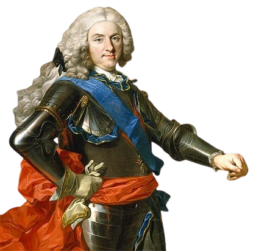
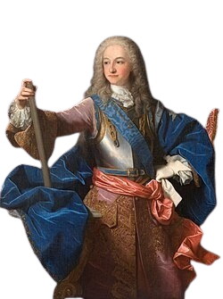
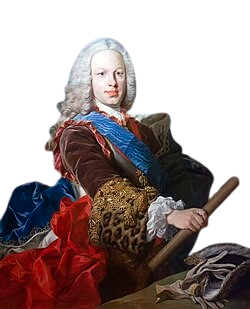
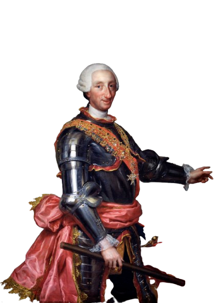
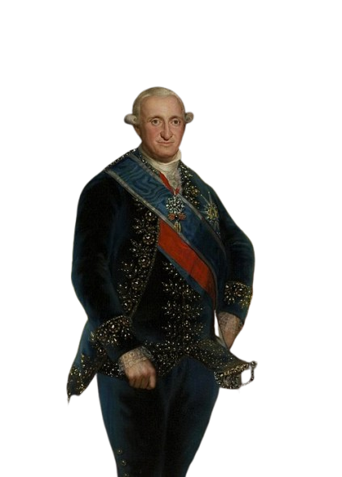
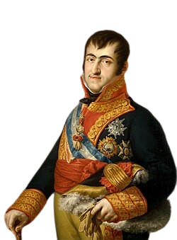
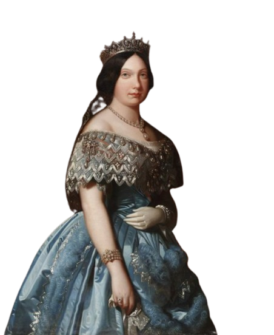

Durante los siglos XVIII y XIX, España fue gobernada por la dinastía Borbón. Este período estuvo marcado por reformas políticas, conflictos internacionales y cambios sociales que transformaron la organización del Estado. Los siglos XVIII y XIX en Europa representaron la transición del Antiguo Régimen a la Edad Contemporánea, marcados por la Ilustración, la Revolución Francesa y la Industrialización. El XVIII, el "Siglo de las Luces", trajo despotismo ilustrado y cambios sociales, mientras que el XIX consolidó el capitalismo, el auge de la burguesía, el nacionalismo y el imperialismo.

Su primer reinado fue desde el 1 de noviembre de 1700 hasta el 14 de enero de 1724, el segundo reinado fue desde el 6 de septiembre de 1724 hasta su muerte en 1746. Reinó por 45 años, 9 meses y 8 días, fue el reinado más largo de la monarquía española, superando al de Felipe IV. Felipe V nació el 19 de diciembre de 1683 en Versalles. Su abuelo fue el rey francés Luis XIV y sus padres el Gran Delfín de Francia, Luis y María Ana Victoria de Baviera.
Es una casa real europea muy importante de origen francés, establecida en 1589, que ha gobernado España, Francia, Sicilia, Parma y Nápoles. Tras la Guerra de Sucesión, Felipe V inauguró la rama borbónica en 1700, manteniendo su reinado intermitentemente hasta la actualidad con Felipe VI.
Fue la Guerra de Sucesión Española (1701-1713), un conflicto internacional que estalló porque las potencias europeas temían la unión de España y Francia bajo los Borbones. Terminó con el Tratado de Utrecht, donde España perdió sus posesiones en Europa (como Flandes e Italia) y Gibraltar, reconfigurando el equilibrio de poder en el continente.
Felipe V aplicó los Decretos de Nueva Planta, que abolieron los fueros e instituciones propias de la Corona de Aragón (Aragón, Cataluña, Valencia y Mallorca) como castigo por no apoyarle en la guerra. Esto impuso las leyes de Castilla en todo el territorio, creando un Estado unificado y centralizado.

Fue el primer Borbón nacido en España, nació el 25 de agosto de 1707 en el palacio del Buen Retiro. Hijo de Felipe V y de María Luisa Gabriela de Saboya. En 1709 fue proclamado príncipe de Asturias y en 1722 se casó con Luisa Isabel de Orleans. Felipe V abdicó inesperadamente en enero de 1724 a su hijo Luis. Luis I murió de viruela tras siete meses de reinado, por lo que Felipe V volvió al trono.
Luis I ostenta el récord del reinado más efímero de la historia de España, con solo 229 días. Al ascender al trono con apenas 16 años tras la abdicación de su padre, su breve mandato representó una esperanza de regeneración nacional que se vio truncada prematuramente por su muerte.
Aunque en la historia mundial existen casos de minutos, en el contexto español, el de Luis I es el más breve. Su repentino fallecimiento obligó a su padre, Felipe V, a retomar la corona en un acto sin precedentes, marcando un periodo de gran inestabilidad institucional.
En el siglo XVIII, la viruela era una de las enfermedades más temidas y letales. Luis I la contrajo apenas siete meses después de ser coronado, falleciendo a los 17 años. Su muerte obligó a su padre, Felipe V, a regresar al trono, un hecho insólito en la historia de la monarquía española.

Nació el 23 de septiembre de 1713 en Madrid, tercer hijo de Felipe V y de su primera esposa María Luisa Gabriela de Saboya. Fue jurado príncipe de Asturias en 1724. Cinco años después se casó con Bárbara de Braganza, hija de Juan V de Portugal y de la archiduquesa Mariana de Austria. En 1746 heredó el trono español a la muerte de su padre.
Se basó en la "Neutralidad Activa", diseñada por sus ministros Carvajal y Ensenada. Fernando VI evitó que España participara en los grandes conflictos europeos de la época, permitiendo que el país se recuperara económicamente, se saneara la Hacienda y se fortaleciera la Armada sin el desgaste de la guerra.
Fernando VI sentía una devoción absoluta por su esposa, Bárbara de Braganza. Su amor era tan profundo que, cuando la reina murió en 1758, el rey cayó en un estado de locura y depresión profunda (el "mal de melancolía"). Se recluyó en el castillo de Villaviciosa de Odón y murió apenas un año después que ella.
El rey fomentó el arte y la ciencia fundando la Real Academia de Bellas Artes de San Fernando en 1752. También impulsó la música, trayendo a la corte a figuras como el castrato Farinelli, y promovió expediciones científicas y la creación del Real Observatorio de Cádiz.

Carlos era el tercer hijo varón de Felipe V que llegó a la vida adulta y el primero que tuvo con su segunda mujer. Carlos sirvió a la política familiar como una pieza en la lucha por recuperar la influencia española en Italia. Nació el 20 de enero de 1716 a las 4 a.m en el Real Alcázar de Madrid. El 25 de agosto de 1716, festividad de San Luis, rey de Francia, fue bautizado solemnemente en la iglesia del Monasterio de San Jerónimo el Real de Madrid junto con sus hermanos mayores Felipe y Fernando.
Carlos III de España es ampliamente reconocido como el máximo exponente del “despotismo ilustrado” en España y uno de los principales monarcas ilustrados de Europa. Modernizó el Estado y la capital con reformas administrativas, científicas y urbanísticas bajo el lema “todo el pueblo, pero sin el pueblo”.
Creó las Reales Fábricas para producir bienes de lujo y reducir las importaciones. Además, fundó el Banco de San Carlos y promulgó el Decreto de Libre Comercio, que permitió que puertos como Barcelona, Málaga o Alicante comerciaran directamente con América, acabando con el monopolio de Cádiz.
Carlos III modernizó Madrid, conocida como 'la villa y corte', introduciendo el alumbrado público, el empedrado de calles y un sistema de alcantarillado. Además, construyó hitos urbanísticos y científicos como el Gabinete de Historia Natural (hoy Museo del Prado), el Jardín Botánico y el Hospital de San Carlos, transformando la capital en una ciudad ilustrada.

Fue rey de España desde el 14 de diciembre de 1788 hasta su abdicación el 19 de marzo de 1808. Accedió al trono poco antes del estallido de la Revolución Francesa, y su falta de carácter solía hacer que delégase el gobierno en manos de su valido, Manuel Godoy, de quien se decía que era amante de su esposa María Luisa de Parma. Su reinado acabó abruptamente el 19 de marzo de 1808 cuando, como consecuencia del motín de Aranjuez, abdicó en favor de su hijo, el príncipe Fernando.
El reinado de Carlos IV estuvo dominado por la figura de su "valido", Manuel Godoy, quien acumuló un poder inmenso y tomó las decisiones clave del Estado. Esta excesiva influencia de Godoy generó un gran rechazo entre la nobleza y el pueblo, quienes se agruparon en torno al hijo del rey, el futuro Fernando VII.
Los reinados europeos entre finales del siglo XVIII y mediados del XIX se caracterizaron por una lucha constante entre el absolutismo y el liberalismo, provocada por oleadas revolucionarias (1789, 1820, 1830 y 1848). monarcas como Luis XVI, Carlos IV, Fernando VII o Carlos X entraron en crisis, destronamientos o el exilio, dando paso a monarquías constitucionales.
La puerta de entrada para la invasión francesa a la Península Ibérica y, por extensión, el inicio del desmoronamiento de la influencia napoleónica en Europa, fue la firma del Tratado de Fontainebleau el 27 de octubre de 1807. Este acuerdo permitió a las tropas francesas cruzar España para invadir Portugal, aliado británico, derivando en la ocupación francesa de España y la Guerra de la Independencia.

Fue rey de España a principios del siglo XIX. Reinó brevemente en 1808 y de nuevo desde 1813 hasta su muerte en 1833. Antes de 1813, fue conocido como el Deseado y, luego, como el Rey Felón. Su reinado se vió opacado por la invasión francesa que colocó en el trono de España a José Bonaparte, hermano de Napoleón, entre mayo de 1808 y diciembre de 1813. Además, la Junta Suprema Central primero y el Consejo de Regencia después gobernaron en su nombre en la zona controlada por los españoles entre 1808 y 1814.
El rey español cautivo por Napoleón Bonaparte fue Fernando VII, quien fue retenido en el castillo de Valençay en Francia entre 1808 y 1813 tras las abdicaciones de Bayona. Este periodo, conocido como el “cautiverio”, provocó un vacío de poder en España y aceleró los procesos de Independencia en América Latina.
El regreso al absolutismo en Europa (1813-1830), conocido como la Restauración, fue la reacción conservadora tras la caída de Napoleón, buscando reinstaurar el Antiguo Régimen y el legitimismo monárquico. Impulsado por el Congreso de Viena, potencias como Rusia, Austria y Prusia persiguieron las ideas liberales, destacando la restauración borbónica en Francia y España.
Radica en una profunda crisis sucesoria tras la muerte de Fernando VII en 1833 y un enfrentamiento ideológico entre el absolutismo tradicionalista (carlistas) y el liberalismo (isabelinos). Carlos María Isidro, hermano del rey, rechazó la sucesión de su sobrina Isabel II, defendiendo el lema “Dios, patria y Rey”.

Isabel II de España (1830-1904), conocida como "la Reina Castiza" por su carácter popular, campechano y afición a las costumbres madrileñas, reinó entre 1833 y 1868. Su ascenso al trono siendo niña provocó las guerras carlistas tras la derogación de la Ley Sálica. Su convulso reinado finalizó con su exilio en Francia.
Isabel II ascendió al trono en medio de la Primera Guerra Carlista, un conflicto civil que enfrentó a sus partidarios (liberales) contra los de su tío Carlos María Isidro (absolutistas). Su legitimidad fue cuestionada desde el primer día debido a la Ley Sálica, definiendo así su agitado mandato.
Su reinado estuvo marcado por la lucha entre liberales moderados y progresistas, lo que provocó cambios constantes de gobierno y numerosas Constituciones. Esta inestabilidad se agravó con los "pronunciamientos" (golpes de Estado militares) y la crisis económica que finalmente llevó a la caída de la monarquía.
La Revolución Gloriosa de septiembre de 1868 derrocó a la reina Isabel II en España, forzándola al exilio en Francia tras la sublevación militar l iderada por los generales Prim, Serrano y el almirante Topete. Este movimiento, impulsado por una profunda crisis política y económica, puso fin a su reinado y dio paso al denominado Sexenio Democrático (1868-1874).